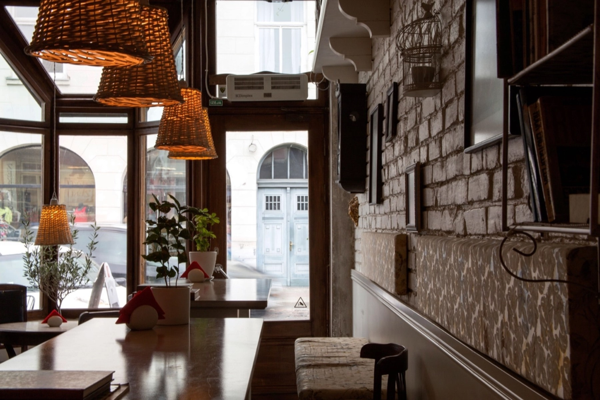
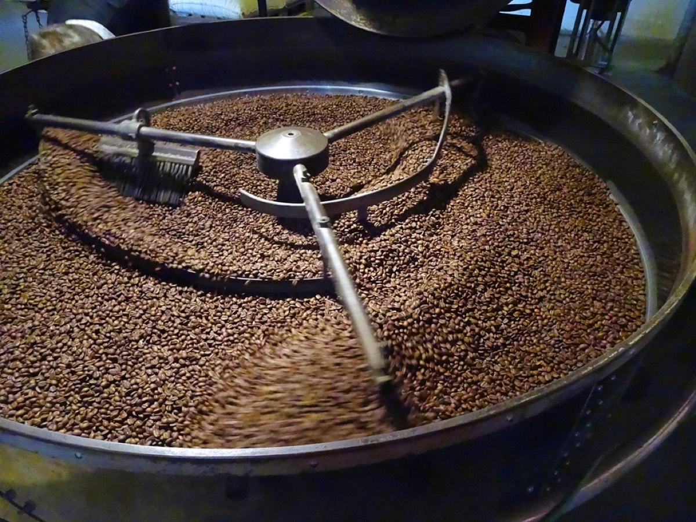
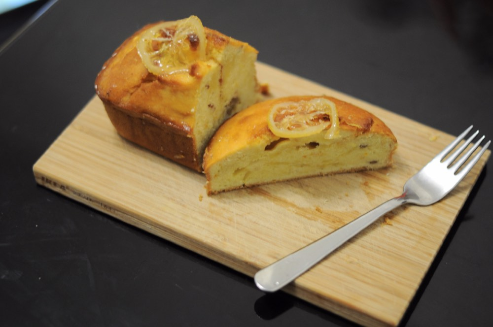

坂の途中で、
ひと息つく一杯を。
店の奥で焙煎した豆を、ご注文ごとに一杯ずつ。焼き菓子と一緒に、ゆっくり過ごせる小さな店です。
Concept
急がない時間を、
珈琲と一緒に。
汐見坂コーヒーは、2019年に坂の途中の古い商店を改装して開いた自家焙煎店です。
豆は店の奥の焙煎機で、その週に使う分だけを焼いています。席は22席。本を読む方、仕事の合間に立ち寄る方、散歩の途中の方。それぞれの時間を邪魔しない、静かな店でありたいと思っています。
店舗案内を見る
Our way
三つのこだわり
-

週ごとの少量焙煎
焼いてから2週間以内の豆だけを使います。季節ごとに産地を入れ替え、常時5種類をご用意しています。
-

一杯ずつ淹れる
ご注文を受けてから豆を挽き、一杯ずつ淹れます。少しお時間をいただく分、香りごとお届けします。
-

毎朝焼く菓子
パウンドケーキやチーズケーキは、開店前に店内の厨房で焼いています。珈琲に合う甘さに仕上げています。
Shop
営業時間・アクセス
| 営業時間 | 10:00〜19:00（ラストオーダー 18:30） |
|---|---|
| 定休日 | 水曜日、第3火曜日 |
| 所在地 | 東京都汐見区汐見町1-2-3 |
| 最寄り駅 | 汐見坂駅 南口から徒歩6分 |
| 電話 | 03-0000-0000 |